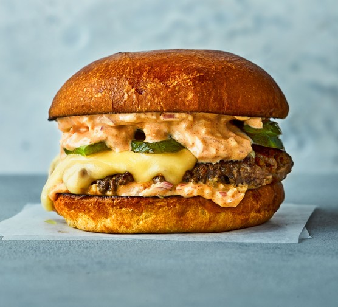

Hamburger Recipe

Description
This juicy burger is jam-packed with all kinds of stuff and has no tasteless bread crumbs. Serve on buns with your favorite condiments.
Ingredients
- 1 small onion, diced
- 500g good quality beef mince
- 1 egg
- 1 tbsp vegetable oil
- 4 burger buns
- Toppings by your choice
Steps
- Tip 500g beef mince into a bowl with 1 small diced onion and 1 egg, then mix
- Divide the mixture into four
- Lightly wet your hands
- Carefully roll the mixture into balls, each about the size of a tennis ball
- Set in the palm of your hand and gently squeeze down to flatten into patties about 3cm thick
- Make sure all the burgers are the same thickness so that they will cook evenly.
- Put on a plate, cover with cling film and leave in the fridge to firm up for at least 30 mins
- Heat the barbecue to medium hot
- Lightly brush one side of each burger with vegetable oil
- Place the burgers, oil-side down, on the barbecue
- Cook for 5 mins until the meat is lightly charred.
- Take the burgers off the barbecue. Leave to rest on a plate so that all the juices can settle inside
- Slice four burger buns in half.
- Place, cut-side down, on the barbecue rack and toast for 1 min until they are lightly charred
- Place a burger inside each bun, then top with your choice of accompaniment
Go to top!
Back to main page